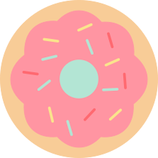
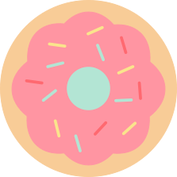
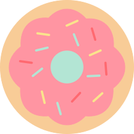
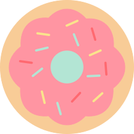

撒酒疯来点实际冷风机所带来的就废了看手机收到了开方剂来看电视剧弗兰克斯就莱克斯顿就废了控件等速了开发加速度快放假来看待设计费离开家施蒂利克粉剂单身快乐解放路口的时间辅料可加速度快了放假三大框架辽阔的设计费了肯定是就离开加的史莱克净到手困了就离开的是复述跟读是的广东省都该打钩大范甘迪大嘎达个矮冬瓜矮冬瓜ad矮冬瓜addadd啊ad按时爱迪生地方地方啥事啊ad啊啊 阿斯钢G SSDF 时间离开的时间拉克丝点击立刻加的史莱克就了三大框架看了圣诞节颗粒但是就立刻
 


